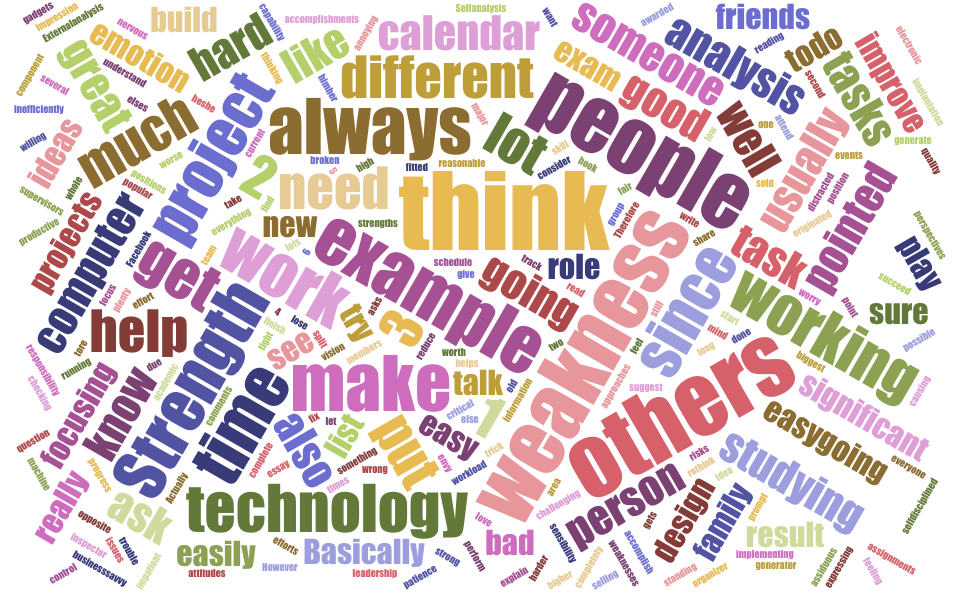

Self Analysis
Strength
I think I have three great strengths, which are worth to point out.
-
My biggest strength is planning. I always plan things ahead and make tasks I need to accomplish well originated. For example, I would put events I want to attend into to calendar and assignments into both to-do list application and calendar (to-do list reminds me what I need to do, calendar reminds me when and how long should I work on them). Therefore, I can easily track my schedule and workload to make sure I can get everything done on time. Another trick I do to make sure I finish tasks in a reasonable time is thinking ahead how I am going to complete a task before I start to work on it. For example, I usually think about what I am going to write in an essay when I am running. This strength basically helps me to succeed in academic and working area.
-
My second strength is great leadership. In a group, I usually play a role as idea generator, organizer, and quality inspector. I always can generate great new ideas either to improve existing projects or build brand new projects. I have clear timeline in mind when we implement a project. Since I read a lot and know lot of technology, so when implementing a project, I will suggest the most fitted technology to build the project. I always try to make the project as good as possible. I will ask supervisors to give feedbacks for the implantation and share the information with team members. If there is something going wrong, I will try to split the project into two approaches to reduce risks and take more responsibility to implement most challenging work.
-
Another strength is sensibility. I am very sensible to others’ feeling and emotion, since I always put myself into their perspectives and positions. I am also very sensible to technology and design. I have the vision to see what technology and design people will like before it gets popular.
Weakness
I also have three major weaknesses.
-
I am easy to envy at others’ accomplishments. I consider myself have very strong capability, so when I see others get awarded, I feel it is not fair since I am not worse than them and I also need to get the awards. Actually, I do not think the weakness is very bad. It usually can prompt me to rethink myself to find out where I did not do well and work harder to improve myself.
-
Sometimes, I am not very focusing. For example, when I know that I will have plenty of time to perform a task, I can be easily distracted from current tasks, such checking Facebook while reading a book. The weakness can make me work very inefficiently. However, I can be really focusing and productive when time is really tight.
-
Another weakness is that I can be impatient when I have put lots of effort and time on one task, but it does not make significant progress. For example, when someone asks me a question and he/she still cannot understand it after I explain several times, I will lose my patience and let him/her to ask someone else.
External Analysis
The comments from my family and friends are very interesting. Basically, everyone has different impression to me and some are completely opposite.
Strength
-
Most people think I am an easy-going person. I always think by standing in someone else’s position and worry about causing trouble to others.
-
Some people think I am very willing to help others. I always ask people if they need my help.
-
Most people think I am very hard working and self-disciplined. I am assiduous in studying and put much more efforts and time on studying and working than others. As a result, I did very well in studying and working.
-
Some think my computer skill is very high. I know a lot about computers and technology. I always help friends and family fix issues about computers and other electronic gadgets.
-
Some think I can focus on what on what I love to do.
-
Some think I am very creative and business-savvy. For example, once my old computer was broken, if selling it as a whole machine, the price was very low. As a result, I tore down the computer into different component and sold them at a much higher price.
Weakness
-
Most of people think I am not very good at expressing my ideas and attitudes. I do not like to talk to the people, who I am not interesting in.
-
Some people think I talk too much, and I can be annoying sometimes due to this weakness.
-
Some think that I am bad at emotion control. I am easy to get too nervous at critical section, such as exams. For example, I used to be hard to get into sleep the day before the exam, so I cannot achieve my best performance in the exam.
Congruence and Incongruence
Congruence
I think most of feedbacks from others match my own analysis to myself or I agree with the description of others’ analysis. Overall, I am a very hard working, easy-going, helpful, smart and creative person, but not good at communication.
Incongruence
Most of incongruences are related to my weakness. For the weakness I pointed out is more inner characteristics, which are not observable to others. For the weakness others pointed out, it is more about my behaviors. Because it is more related to behaviors, so the feedbacks vary among people, since I can have different behaviors to different person. For example, some people think I am talking too much, but others think I am too quiet and do not like to speak or communicate with others. Some weakness pointed by others are based on the knowledge to me few years ago, so there can be gap between the perceptions, since I have been changing a lot.
Feature-benefit

Based on previous analysis, I create the visualization to help me to see special features. I think my most distinguish features are creativity, envision, planning and organizing skills.
-
Creativity helps me generate cool ideas to solve issues
-
Envision and sensibility help me see the opportunities and potential risks.
-
Planning and organizing skills help work on tasks efficiently and effectively
-
Leadership can bring talent people together
These features can help me play an important role in future work and make significant contributions.
Click here to view My Resume